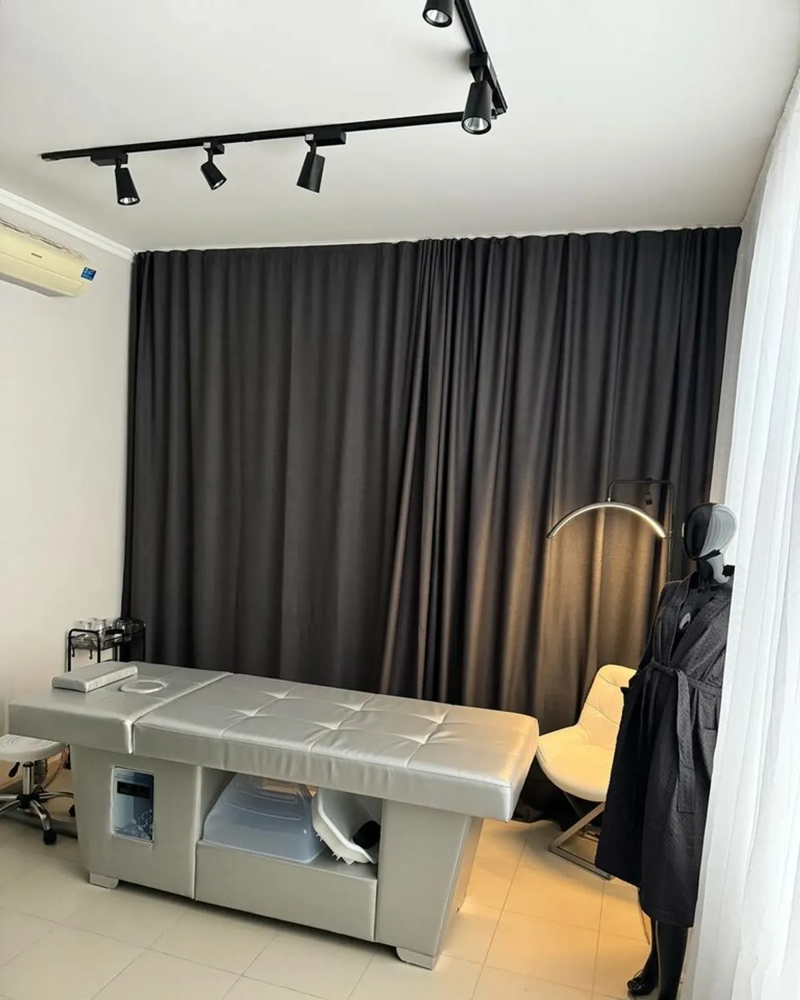
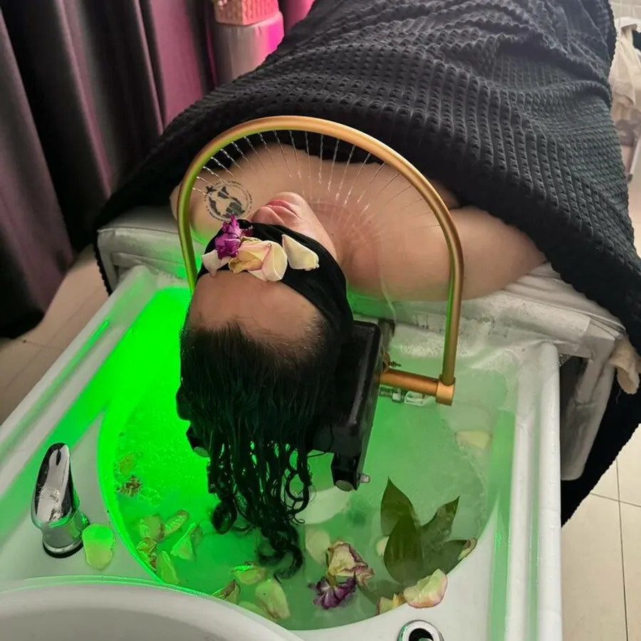
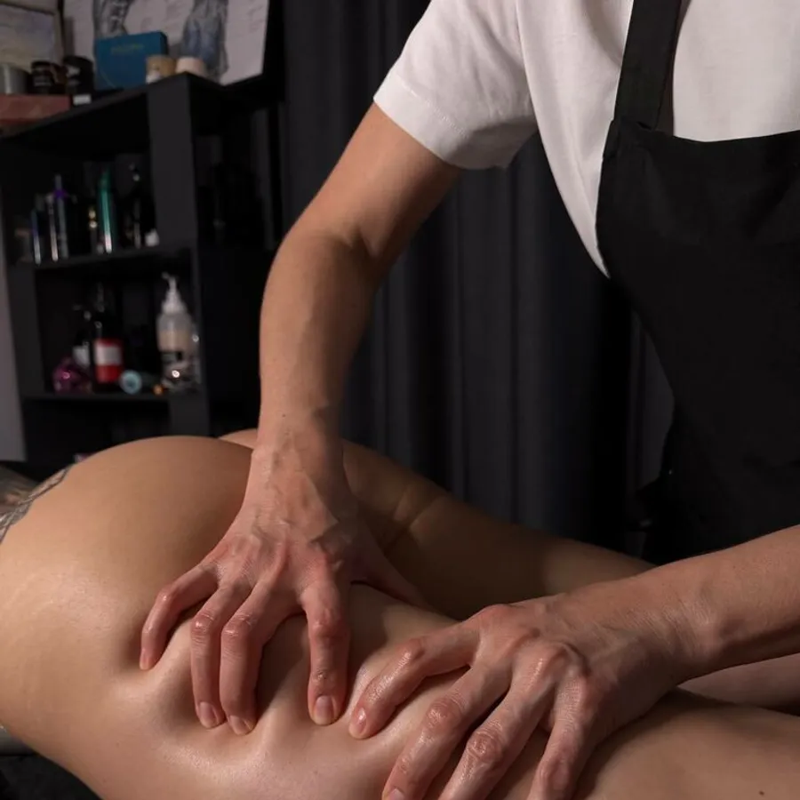
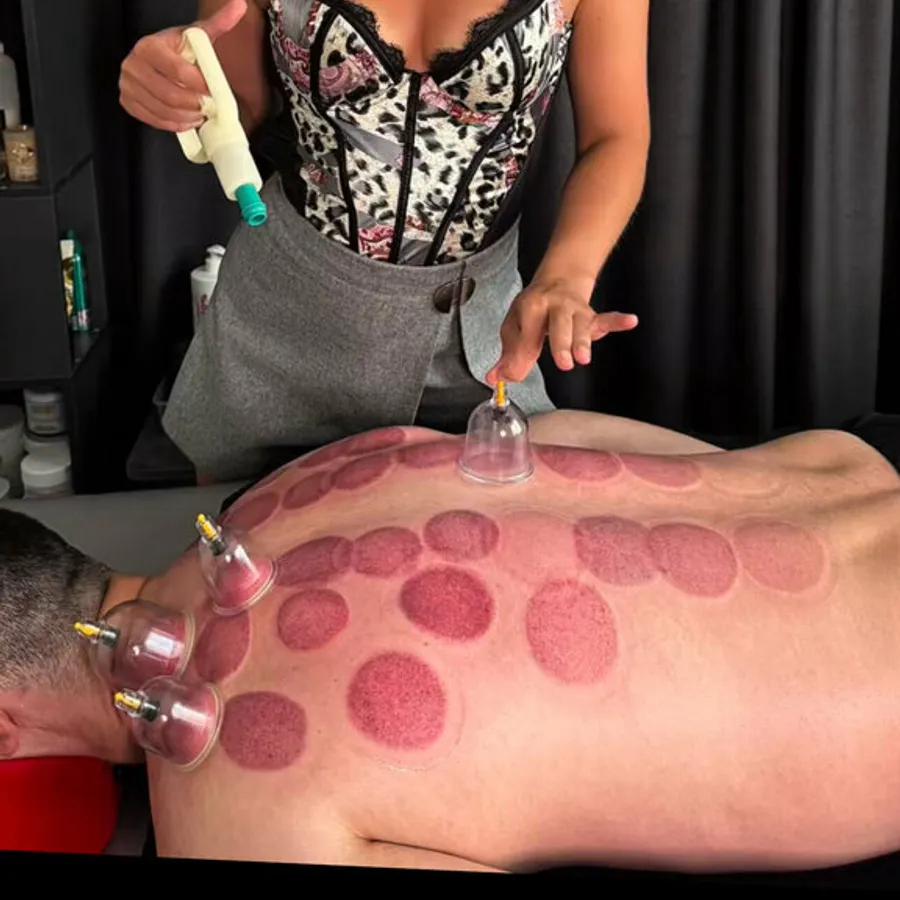

Массаж и Индиба
от 2 000 ₽
Ваш демо-сайт · массажный салон
Массажный салон в центре Ставрополя: классический, релакс и спортивный массаж, висцеральный массаж, лимфокоррекция, Индиба. Запись во ВКонтакте и по телефону.

Услуги и цены
Что у нас можно заказать
- Массаж женский, 1 час2 000 ₽1 ч
- Массаж женский, 1,5 часа2 500 ₽1,5 ч
- Массаж спины3 000 ₽
- Висцеральный массаж3 500 ₽
- Лимфокоррекция (авторская техника)4 000 ₽
- Релакс-массаж с горячими камнями6 000 ₽
Цены взяты с карточки на Яндекс.Картах и зависят от мастера и длительности, уточняйте при записи.
Фото
Как у нас



Отзыв с Яндекс.Карт
«Анастасия безусловно профессиональный высококлассный специалист, которых сложно найти.»Екатерина Г., 4 сентября
Контакты
Записаться
- Телефон+7 (928) 300-87-78
- ВКонтактенаписать
- АдресПартизанская ул., 22
- Часы работыежедневно, 09:00–21:00